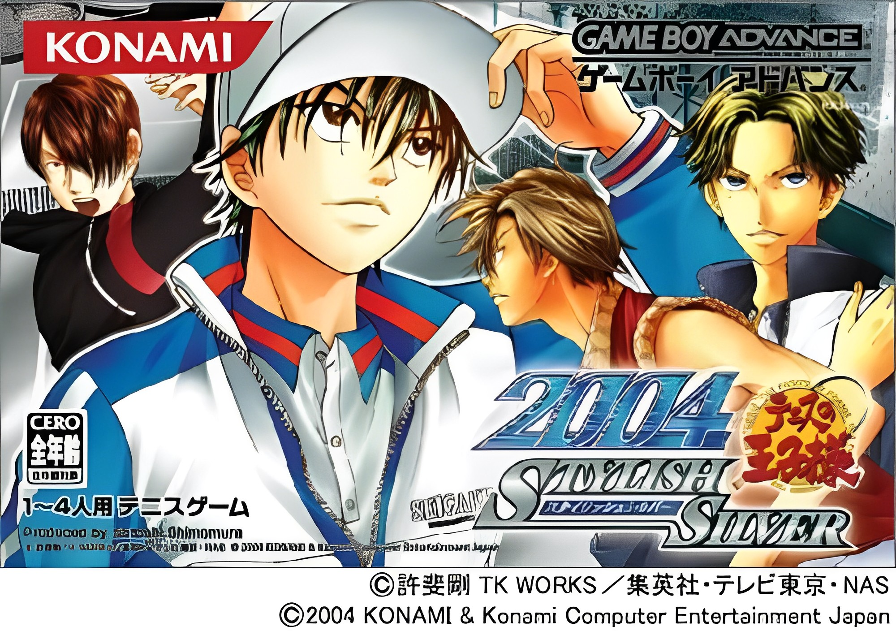

PERSONAJES POR ESCUELAS
"Prince of Tennis 2004 - Stylish Silver"(SS)
- Seishun Gakuen (Seigaku)
- Fudoumine
- Hyoutei Gakuen
- Rokkaku
- Extras
"Prince of Tennis 2004 - Glorious Gold"(GG)
- Seishun Gakuen (Seigaku)
- Fudoumine
- Hyoutei Gakuen
- Rokkaku
- Extras

"Prince of Tennis 2004 - Stylish Silver"(SS)
Seishun Gakuen (Seigaku)
Para destrabar a:
-----------------
Tezuka: SS: Terminar singles con Ryoma sin perder ni un punto, o terminar Dobles con Ohishi y Yamato.
Fuji: SS: Terminar singles con Kawamura, o terminar dobles con Ryoma y Tezuka.
Ohishi: SS: Terminar singles con Michiru.
Kikumaru: SS: Terminar dobles con Ohishi y Fuji.
Kawamura: SS: Terminar dobles con Amane y Kurobane, o terminar singles con Ishida o Kabaji.
Inui: SS: Terminar dobles con Ryoma y Kaidoh, o terminar singles con Tezuka.
Momoshiro: SS: Terminar dobles con Atobe y Kabaji, o terminar singles con Kamio sin perder ni un punto.
Kaidoh: SS: Terminar singles con Kamio.
Yamato: SS: Terminar singles con Ohishi sin perder ni un punto. Tambien terminando dobles con Tezuka del GG y Ohishi del SS.
Fudoumine
Hyoutei Gakuen
Rokkaku
Extras

"Prince of Tennis 2004 - Glorious Gold"(GG)
Seishun Gakuen (Seigaku)
Para destrabar a:
-----------------
Tezuka: GG: Terminar dobles con Fuji e Inui.
Fuji: GG: Terminar dobles con Ryoma y Kikumaru, o terminar singles con Mizuki sin perder ni un punto.
Ohishi: GG: Terminar dobles con Fuji e Inui. GG: Terminar singles con Yamato, o terminar dobles con Minami y Higashikata.
Kikumaru: GG: Terminar dobles con Akazawa y Kaneda.
Kawamura: GG: Terminar dobles con Momoshiro y Fuji, o terminar singles con Akutsu.
Inui: GG: Terminar dobles con Ryoma y Kaidoh.
Momoshiro: GG: Terminar singles con Ryoma.
Kaidoh: GG: Terminar singles con Momoshiro.
Yamato: GG: Terminar singles con Tezuka sin perder ni un punto. Tambien terminando dobles con Tezuka del GG y Ohishi del SS.
Fudoumine
Hyoutei Gakuen
Rokkaku
Extras